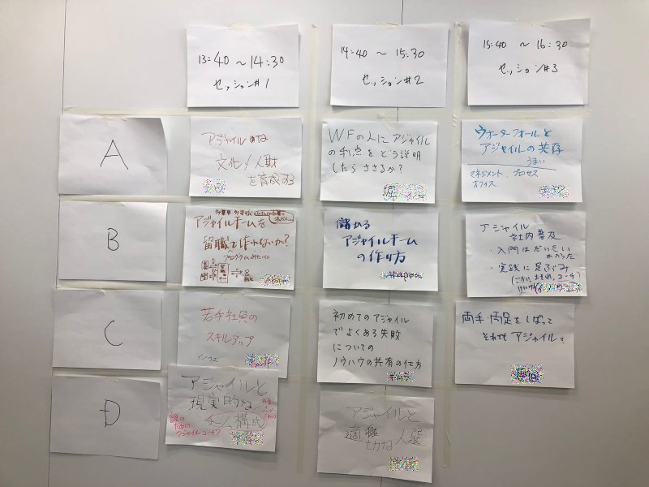
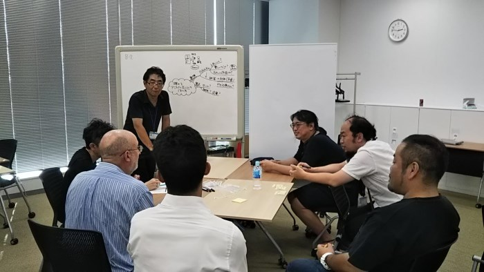

DEIM2023は、実に4年ぶりの対面でのフォーラムとなります。そこで対面第１日目のDay4にネットワーキングセッションを企画しました。
ネットワーキングセッションでは、久しぶりの対面イベントで緊張している人も初めての学会参加でドキドキしている人も、いろんな方と話をしたり 知り合いを作ったりできる、自由な対話の場を用意します。
このセッションで行うのはOpen Space Technology（OST）です。 OSTは1985年にハリソンオーウェンが提唱した「対話の広場」を作るための方法です。彼は組織開発の専門家なのですが、あるとき彼が主催した学会で参加者に 「会議も素晴らしかったが、コーヒーブレイクの時間が一番有意義だった」と言われショックを受けます。 皆さんも覚えがありませんか？休憩での雑談で盛り上がったり知り合いができたこと。
参加者が話したいテーマを話しそれに興味を持つ人が自然に集まって自由に対話する時その場の熱量は高まり創造的な場となります。
でも、初めての学会参加、久しぶりの対面参加。コーヒーブレイクの時間といえども、声をかける勇気はないし、どんなタイミングで何を話していいか困ってしまいますよね。
そんな人でも話がしやすくなるように、OSTでは原則と枠組みを用意しています。

（画像は
オブジェクトの広場、参加者がつくる対話の場 オープンスペーステクノロジーより引用）

（画像は
オブジェクトの広場、参加者がつくる対話の場 オープンスペーステクノロジーより引用）
そんなOSTですが、とっても大事なルールがあります。（4つの原則と1つの法則がありますが、私の独断で3つ選びます）
一言で言えばなんでも良いです。学会だから技術的なこと高尚なことをテーマを出さなければ、なんて必要ありません。
「今日の夕飯どこに行く」
「ラーメンの実地調査に行きます」
「学会初参加で緊張してる人集まれ」
「他の人の研究生活が知りたい」
「実はあのチュートリアル理解できてないので教えて」
「おすすめの本教えて」
「明日どこでポスターやるのか教え合おう」
「知り合い３人くらい作って帰りたい」
こんな感じで、素直に思ったことをテーマに出して構いません。多分自分が思ったら、同じことを考えている人が必ずいるはずです。